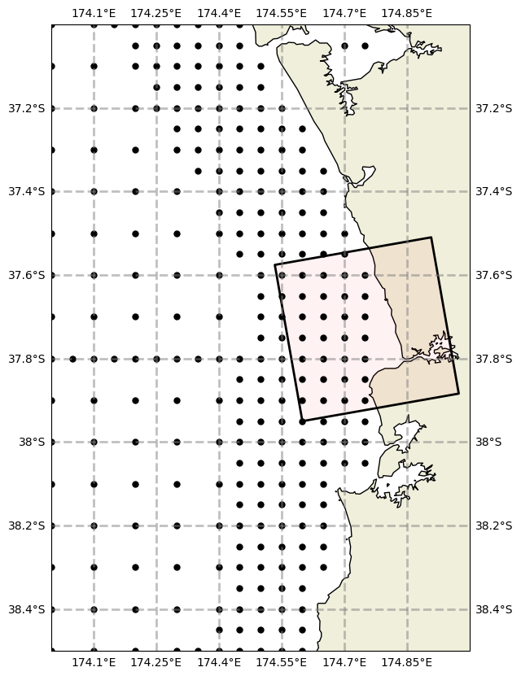

Working demonstration#
[1]:
# Set up notebook
%load_ext autoreload
%autoreload 2
%matplotlib inline
Run rompy#
[20]:
# Lets use an existing config file
!cat oceanum_demo.yml
# Note that this is config demonstrates a full model
# example running off the coast of Raglan. It uses
# era5 wind forcing, and spectral boundaries from
# oceanum's global hindcast. These datasets are
# read from the oceanum catalog
run_id: oceanum
period:
start: 20230101T00
duration: 6h
interval: 1h
output_dir: simulations
config:
model_type: swan
grid:
x0: 174.60
y0: -37.95
rot: 10.0
dx: 0.02
dy: 0.02
nx: 20
ny: 20
gridtype: REG
spectral_resolution:
fmin: 0.0464
fmax: 1.0
nfreqs: 31
ndirs: 36
forcing:
wind:
model_type: swan
id: wind
var: WIND
dataset:
model_type: intake
catalog_uri: ../rompy/catalogs/oceanum.yaml
dataset_id: era5_wind10m
filter:
sort:
coords: [latitude]
z1: u10
z2: v10
latname: latitude
lonname: longitude
bottom:
id: bottom
var: BOTTOM
dataset:
model_type: intake
catalog_uri: ../rompy/catalogs/oceanum.yaml
dataset_id: gebco_2022
fac: -1.0
z1: elevation
latname: lat
lonname: lon
boundary:
id: bnd
dataset:
model_type: intake
catalog_uri: ../rompy/catalogs/oceanum.yaml
dataset_id: oceanum_wave_nz_era5_v1_spec
# dataset_id: oceanum_wave_glob05_era5_v1_spec
latname: lat
lonname: lon
tolerance: 0.1
spacing: 0.01
sel_method: idw
rectangle: closed
physics:
friction: "MAD"
friction_coeff: 0.1
outputs:
grid:
variables:
- DEPTH
- UBOT
- HSIGN
- HSWELL
- DIR
- TPS
- TM01
- WIND
spec:
locations:
coords:
- lon: 174.61
lat: -37.96
- lon: 174.62
lat: -37.96
- lon: 174.62
lat: -37.97
[21]:
# This loading is awkward due to a pydantic issue - will be fixed
from rompy import ModelRun
from rompy.swan import SwanConfig
import yaml
import matplotlib.pyplot as plt
import xarray as xr
from cartopy import crs as ccrs
from wavespectra import read_swan
[22]:
args = yaml.load(open('oceanum_demo.yml', 'r'), Loader=yaml.FullLoader)
run = ModelRun(**args)
[23]:
run.config.outputs.spec.locations
[23]:
OutputLocs
-37.96 174.61
-37.96 174.62
-37.97 174.62
[24]:
# Check the grid and spectral boundary points
boundary = run.config.forcing.boundary.ds.isel(time=0)
run.config.grid.plot()
[24]:
(<Figure size 1000x1000 with 1 Axes>, <GeoAxes: >)
[25]:
# Check the grid and spectral boundary points
xlim = (174, 175.0)
ylim = (-38.5, -37)
bnd_points = run.config.forcing.boundary.ds[["lat", "lon"]]
bnd_points = bnd_points.where(
(
(bnd_points.lon >= xlim[0]) &
(bnd_points.lon <= xlim[1]) &
(bnd_points.lat >= ylim[0]) &
(bnd_points.lat <= ylim[1])
)
)
fig, ax = run.config.grid.plot()
ax.plot(bnd_points.lon, bnd_points.lat, "ok", markersize=5, transform=ccrs.PlateCarree())
xlim = ax.set_xlim(xlim)
ylim = ax.set_ylim(ylim)

[31]:
# Plot bottom grid to check
run.config.forcing.bottom._filter_grid(grid=run.config.grid)
fig, ax = run.config.forcing.bottom.plot(param='elevation', vmin=-70, vmax=0)
ax.plot(run.config.grid.x, run.config.grid.y, ".k");
[9]:
# Plot a single time step of the wind as a check
# (note that these next three lines are done internally within the wrapper,
# we may want to write convenience methods for this)
run.config.forcing.wind._filter_grid(grid=run.config.grid)
run.config.forcing.wind._filter_time(time=run.period)
run.config.forcing.wind.plot(isel={'time': 0}, param='u10')
[9]:
(<Figure size 1000x1000 with 2 Axes>,
<GeoAxes: title={'center': 'time = 2023-01-01'}, xlabel='longitude', ylabel='latitude'>)
[10]:
run()
INFO:rompy.model:
INFO:rompy.model:-----------------------------------------------------
INFO:rompy.model:Model settings:
INFO:rompy.model:
period:
Start: 2023-01-01 00:00:00
End: 2023-01-01 06:00:00
Duration: 6:00:00
Interval: 1:00:00
Include End: True
output_dir:
simulations
config:
grid:
SwanGrid: REG, 20x20
spectral_resolution:
fmin=0.0464 fmax=1.0 nfreqs=31 ndirs=36
forcing:
bottom: DatasetIntake(catalog_uri=../rompy/catalogs/oceanum.yaml, dataset_id=gebco_2022)
wind: DatasetIntake(catalog_uri=../rompy/catalogs/oceanum.yaml, dataset_id=era5_wind10m)
boundary: DatasetIntake(catalog_uri=../rompy/catalogs/oceanum.yaml, dataset_id=oceanum_wave_nz_era5_v1_spec)
physics:
friction='MAD' friction_coeff=0.1
outputs:
Grid:
variables: DEPTH UBOT HSIGN HSWELL DIR TPS TM01 WIND
Spec
locations: -37.96 174.61
-37.96 174.62
-37.97 174.62
template:
/source/csiro/rompy/rompy/templates/swan
INFO:rompy.model:-----------------------------------------------------
INFO:rompy.model:Generating model input files in simulations
INFO:rompy.swan.config: Processing bottom forcing
INFO:rompy.swan.data: Writing bottom to simulations/oceanum/bottom.grd
INFO:rompy.swan.config: Processing wind forcing
INFO:rompy.swan.data: Writing wind to simulations/oceanum/wind.grd
INFO:rompy.swan.config: Processing boundary forcing
INFO:rompy.model:
INFO:rompy.model:Successfully generated project in simulations
INFO:rompy.model:-----------------------------------------------------
[10]:
'/source/csiro/rompy/notebooks/simulations/oceanum'
Run SWAN#
[11]:
# Run the model
!docker run -v ./simulations/oceanum:/home oceanum/swan:4141 swan.exe
SWAN is preparing computation
+SWAN is processing output request 1
+SWAN is processing output request 2
+time 20230101.001500 , step 1; iteration 1; sweep 1
+time 20230101.001500 , step 1; iteration 1; sweep 2
+time 20230101.001500 , step 1; iteration 1; sweep 3
+time 20230101.001500 , step 1; iteration 1; sweep 4
+time 20230101.001500 , step 1; iteration 2; sweep 1
+time 20230101.001500 , step 1; iteration 2; sweep 2
+time 20230101.001500 , step 1; iteration 2; sweep 3
+time 20230101.001500 , step 1; iteration 2; sweep 4
+time 20230101.001500 , step 1; iteration 3; sweep 1
+time 20230101.001500 , step 1; iteration 3; sweep 2
+time 20230101.001500 , step 1; iteration 3; sweep 3
+time 20230101.001500 , step 1; iteration 3; sweep 4
+time 20230101.001500 , step 1; iteration 4; sweep 1
+time 20230101.001500 , step 1; iteration 4; sweep 2
+time 20230101.001500 , step 1; iteration 4; sweep 3
+time 20230101.001500 , step 1; iteration 4; sweep 4
+time 20230101.001500 , step 1; iteration 5; sweep 1
+time 20230101.001500 , step 1; iteration 5; sweep 2
+time 20230101.001500 , step 1; iteration 5; sweep 3
+time 20230101.001500 , step 1; iteration 5; sweep 4
+time 20230101.001500 , step 1; iteration 6; sweep 1
+time 20230101.001500 , step 1; iteration 6; sweep 2
+time 20230101.001500 , step 1; iteration 6; sweep 3
+time 20230101.001500 , step 1; iteration 6; sweep 4
+time 20230101.001500 , step 1; iteration 7; sweep 1
+time 20230101.001500 , step 1; iteration 7; sweep 2
+time 20230101.001500 , step 1; iteration 7; sweep 3
+time 20230101.001500 , step 1; iteration 7; sweep 4
+time 20230101.001500 , step 1; iteration 8; sweep 1
+time 20230101.001500 , step 1; iteration 8; sweep 2
+time 20230101.001500 , step 1; iteration 8; sweep 3
+time 20230101.001500 , step 1; iteration 8; sweep 4
+time 20230101.001500 , step 1; iteration 9; sweep 1
+time 20230101.001500 , step 1; iteration 9; sweep 2
+time 20230101.001500 , step 1; iteration 9; sweep 3
+time 20230101.001500 , step 1; iteration 9; sweep 4
+time 20230101.001500 , step 1; iteration 10; sweep 1
+time 20230101.001500 , step 1; iteration 10; sweep 2
+time 20230101.001500 , step 1; iteration 10; sweep 3
+time 20230101.001500 , step 1; iteration 10; sweep 4
+time 20230101.001500 , step 1; iteration 11; sweep 1
+time 20230101.001500 , step 1; iteration 11; sweep 2
+time 20230101.001500 , step 1; iteration 11; sweep 3
+time 20230101.001500 , step 1; iteration 11; sweep 4
+time 20230101.001500 , step 1; iteration 12; sweep 1
+time 20230101.001500 , step 1; iteration 12; sweep 2
+time 20230101.001500 , step 1; iteration 12; sweep 3
+time 20230101.001500 , step 1; iteration 12; sweep 4
+time 20230101.001500 , step 1; iteration 13; sweep 1
+time 20230101.001500 , step 1; iteration 13; sweep 2
+time 20230101.001500 , step 1; iteration 13; sweep 3
+time 20230101.001500 , step 1; iteration 13; sweep 4
+time 20230101.003000 , step 2; iteration 1; sweep 1
+time 20230101.003000 , step 2; iteration 1; sweep 2
+time 20230101.003000 , step 2; iteration 1; sweep 3
+time 20230101.003000 , step 2; iteration 1; sweep 4
+time 20230101.003000 , step 2; iteration 2; sweep 1
+time 20230101.003000 , step 2; iteration 2; sweep 2
+time 20230101.003000 , step 2; iteration 2; sweep 3
+time 20230101.003000 , step 2; iteration 2; sweep 4
+time 20230101.003000 , step 2; iteration 3; sweep 1
+time 20230101.003000 , step 2; iteration 3; sweep 2
+time 20230101.003000 , step 2; iteration 3; sweep 3
+time 20230101.003000 , step 2; iteration 3; sweep 4
+time 20230101.003000 , step 2; iteration 4; sweep 1
+time 20230101.003000 , step 2; iteration 4; sweep 2
+time 20230101.003000 , step 2; iteration 4; sweep 3
+time 20230101.003000 , step 2; iteration 4; sweep 4
+time 20230101.004500 , step 3; iteration 1; sweep 1
+time 20230101.004500 , step 3; iteration 1; sweep 2
+time 20230101.004500 , step 3; iteration 1; sweep 3
+time 20230101.004500 , step 3; iteration 1; sweep 4
+time 20230101.004500 , step 3; iteration 2; sweep 1
+time 20230101.004500 , step 3; iteration 2; sweep 2
+time 20230101.004500 , step 3; iteration 2; sweep 3
+time 20230101.004500 , step 3; iteration 2; sweep 4
+time 20230101.004500 , step 3; iteration 3; sweep 1
+time 20230101.004500 , step 3; iteration 3; sweep 2
+time 20230101.004500 , step 3; iteration 3; sweep 3
+time 20230101.004500 , step 3; iteration 3; sweep 4
+time 20230101.004500 , step 3; iteration 4; sweep 1
+time 20230101.004500 , step 3; iteration 4; sweep 2
+time 20230101.004500 , step 3; iteration 4; sweep 3
+time 20230101.004500 , step 3; iteration 4; sweep 4
+time 20230101.010000 , step 4; iteration 1; sweep 1
+time 20230101.010000 , step 4; iteration 1; sweep 2
+time 20230101.010000 , step 4; iteration 1; sweep 3
+time 20230101.010000 , step 4; iteration 1; sweep 4
+time 20230101.010000 , step 4; iteration 2; sweep 1
+time 20230101.010000 , step 4; iteration 2; sweep 2
+time 20230101.010000 , step 4; iteration 2; sweep 3
+time 20230101.010000 , step 4; iteration 2; sweep 4
+time 20230101.010000 , step 4; iteration 3; sweep 1
+time 20230101.010000 , step 4; iteration 3; sweep 2
+time 20230101.010000 , step 4; iteration 3; sweep 3
+time 20230101.010000 , step 4; iteration 3; sweep 4
+time 20230101.010000 , step 4; iteration 4; sweep 1
+time 20230101.010000 , step 4; iteration 4; sweep 2
+time 20230101.010000 , step 4; iteration 4; sweep 3
+time 20230101.010000 , step 4; iteration 4; sweep 4
+SWAN is processing output request 1
+SWAN is processing output request 2
+time 20230101.011500 , step 5; iteration 1; sweep 1
+time 20230101.011500 , step 5; iteration 1; sweep 2
+time 20230101.011500 , step 5; iteration 1; sweep 3
+time 20230101.011500 , step 5; iteration 1; sweep 4
+time 20230101.011500 , step 5; iteration 2; sweep 1
+time 20230101.011500 , step 5; iteration 2; sweep 2
+time 20230101.011500 , step 5; iteration 2; sweep 3
+time 20230101.011500 , step 5; iteration 2; sweep 4
+time 20230101.011500 , step 5; iteration 3; sweep 1
+time 20230101.011500 , step 5; iteration 3; sweep 2
+time 20230101.011500 , step 5; iteration 3; sweep 3
+time 20230101.011500 , step 5; iteration 3; sweep 4
+time 20230101.011500 , step 5; iteration 4; sweep 1
+time 20230101.011500 , step 5; iteration 4; sweep 2
+time 20230101.011500 , step 5; iteration 4; sweep 3
+time 20230101.011500 , step 5; iteration 4; sweep 4
+time 20230101.013000 , step 6; iteration 1; sweep 1
+time 20230101.013000 , step 6; iteration 1; sweep 2
+time 20230101.013000 , step 6; iteration 1; sweep 3
+time 20230101.013000 , step 6; iteration 1; sweep 4
+time 20230101.013000 , step 6; iteration 2; sweep 1
+time 20230101.013000 , step 6; iteration 2; sweep 2
+time 20230101.013000 , step 6; iteration 2; sweep 3
+time 20230101.013000 , step 6; iteration 2; sweep 4
+time 20230101.013000 , step 6; iteration 3; sweep 1
+time 20230101.013000 , step 6; iteration 3; sweep 2
+time 20230101.013000 , step 6; iteration 3; sweep 3
+time 20230101.013000 , step 6; iteration 3; sweep 4
+time 20230101.013000 , step 6; iteration 4; sweep 1
+time 20230101.013000 , step 6; iteration 4; sweep 2
+time 20230101.013000 , step 6; iteration 4; sweep 3
+time 20230101.013000 , step 6; iteration 4; sweep 4
+time 20230101.014500 , step 7; iteration 1; sweep 1
+time 20230101.014500 , step 7; iteration 1; sweep 2
+time 20230101.014500 , step 7; iteration 1; sweep 3
+time 20230101.014500 , step 7; iteration 1; sweep 4
+time 20230101.014500 , step 7; iteration 2; sweep 1
+time 20230101.014500 , step 7; iteration 2; sweep 2
+time 20230101.014500 , step 7; iteration 2; sweep 3
+time 20230101.014500 , step 7; iteration 2; sweep 4
+time 20230101.014500 , step 7; iteration 3; sweep 1
+time 20230101.014500 , step 7; iteration 3; sweep 2
+time 20230101.014500 , step 7; iteration 3; sweep 3
+time 20230101.014500 , step 7; iteration 3; sweep 4
+time 20230101.014500 , step 7; iteration 4; sweep 1
+time 20230101.014500 , step 7; iteration 4; sweep 2
+time 20230101.014500 , step 7; iteration 4; sweep 3
+time 20230101.014500 , step 7; iteration 4; sweep 4
+time 20230101.020000 , step 8; iteration 1; sweep 1
+time 20230101.020000 , step 8; iteration 1; sweep 2
+time 20230101.020000 , step 8; iteration 1; sweep 3
+time 20230101.020000 , step 8; iteration 1; sweep 4
+time 20230101.020000 , step 8; iteration 2; sweep 1
+time 20230101.020000 , step 8; iteration 2; sweep 2
+time 20230101.020000 , step 8; iteration 2; sweep 3
+time 20230101.020000 , step 8; iteration 2; sweep 4
+time 20230101.020000 , step 8; iteration 3; sweep 1
+time 20230101.020000 , step 8; iteration 3; sweep 2
+time 20230101.020000 , step 8; iteration 3; sweep 3
+time 20230101.020000 , step 8; iteration 3; sweep 4
+time 20230101.020000 , step 8; iteration 4; sweep 1
+time 20230101.020000 , step 8; iteration 4; sweep 2
+time 20230101.020000 , step 8; iteration 4; sweep 3
+time 20230101.020000 , step 8; iteration 4; sweep 4
+SWAN is processing output request 1
+SWAN is processing output request 2
+time 20230101.021500 , step 9; iteration 1; sweep 1
+time 20230101.021500 , step 9; iteration 1; sweep 2
+time 20230101.021500 , step 9; iteration 1; sweep 3
+time 20230101.021500 , step 9; iteration 1; sweep 4
+time 20230101.021500 , step 9; iteration 2; sweep 1
+time 20230101.021500 , step 9; iteration 2; sweep 2
+time 20230101.021500 , step 9; iteration 2; sweep 3
+time 20230101.021500 , step 9; iteration 2; sweep 4
+time 20230101.021500 , step 9; iteration 3; sweep 1
+time 20230101.021500 , step 9; iteration 3; sweep 2
+time 20230101.021500 , step 9; iteration 3; sweep 3
+time 20230101.021500 , step 9; iteration 3; sweep 4
+time 20230101.023000 , step 10; iteration 1; sweep 1
+time 20230101.023000 , step 10; iteration 1; sweep 2
+time 20230101.023000 , step 10; iteration 1; sweep 3
+time 20230101.023000 , step 10; iteration 1; sweep 4
+time 20230101.023000 , step 10; iteration 2; sweep 1
+time 20230101.023000 , step 10; iteration 2; sweep 2
+time 20230101.023000 , step 10; iteration 2; sweep 3
+time 20230101.023000 , step 10; iteration 2; sweep 4
+time 20230101.023000 , step 10; iteration 3; sweep 1
+time 20230101.023000 , step 10; iteration 3; sweep 2
+time 20230101.023000 , step 10; iteration 3; sweep 3
+time 20230101.023000 , step 10; iteration 3; sweep 4
+time 20230101.024500 , step 11; iteration 1; sweep 1
+time 20230101.024500 , step 11; iteration 1; sweep 2
+time 20230101.024500 , step 11; iteration 1; sweep 3
+time 20230101.024500 , step 11; iteration 1; sweep 4
+time 20230101.024500 , step 11; iteration 2; sweep 1
+time 20230101.024500 , step 11; iteration 2; sweep 2
+time 20230101.024500 , step 11; iteration 2; sweep 3
+time 20230101.024500 , step 11; iteration 2; sweep 4
+time 20230101.024500 , step 11; iteration 3; sweep 1
+time 20230101.024500 , step 11; iteration 3; sweep 2
+time 20230101.024500 , step 11; iteration 3; sweep 3
+time 20230101.024500 , step 11; iteration 3; sweep 4
+time 20230101.030000 , step 12; iteration 1; sweep 1
+time 20230101.030000 , step 12; iteration 1; sweep 2
+time 20230101.030000 , step 12; iteration 1; sweep 3
+time 20230101.030000 , step 12; iteration 1; sweep 4
+time 20230101.030000 , step 12; iteration 2; sweep 1
+time 20230101.030000 , step 12; iteration 2; sweep 2
+time 20230101.030000 , step 12; iteration 2; sweep 3
+time 20230101.030000 , step 12; iteration 2; sweep 4
+time 20230101.030000 , step 12; iteration 3; sweep 1
+time 20230101.030000 , step 12; iteration 3; sweep 2
+time 20230101.030000 , step 12; iteration 3; sweep 3
+time 20230101.030000 , step 12; iteration 3; sweep 4
+SWAN is processing output request 1
+SWAN is processing output request 2
+time 20230101.031500 , step 13; iteration 1; sweep 1
+time 20230101.031500 , step 13; iteration 1; sweep 2
+time 20230101.031500 , step 13; iteration 1; sweep 3
+time 20230101.031500 , step 13; iteration 1; sweep 4
+time 20230101.031500 , step 13; iteration 2; sweep 1
+time 20230101.031500 , step 13; iteration 2; sweep 2
+time 20230101.031500 , step 13; iteration 2; sweep 3
+time 20230101.031500 , step 13; iteration 2; sweep 4
+time 20230101.031500 , step 13; iteration 3; sweep 1
+time 20230101.031500 , step 13; iteration 3; sweep 2
+time 20230101.031500 , step 13; iteration 3; sweep 3
+time 20230101.031500 , step 13; iteration 3; sweep 4
+time 20230101.033000 , step 14; iteration 1; sweep 1
+time 20230101.033000 , step 14; iteration 1; sweep 2
+time 20230101.033000 , step 14; iteration 1; sweep 3
+time 20230101.033000 , step 14; iteration 1; sweep 4
+time 20230101.033000 , step 14; iteration 2; sweep 1
+time 20230101.033000 , step 14; iteration 2; sweep 2
+time 20230101.033000 , step 14; iteration 2; sweep 3
+time 20230101.033000 , step 14; iteration 2; sweep 4
+time 20230101.034500 , step 15; iteration 1; sweep 1
+time 20230101.034500 , step 15; iteration 1; sweep 2
+time 20230101.034500 , step 15; iteration 1; sweep 3
+time 20230101.034500 , step 15; iteration 1; sweep 4
+time 20230101.034500 , step 15; iteration 2; sweep 1
+time 20230101.034500 , step 15; iteration 2; sweep 2
+time 20230101.034500 , step 15; iteration 2; sweep 3
+time 20230101.034500 , step 15; iteration 2; sweep 4
+time 20230101.040000 , step 16; iteration 1; sweep 1
+time 20230101.040000 , step 16; iteration 1; sweep 2
+time 20230101.040000 , step 16; iteration 1; sweep 3
+time 20230101.040000 , step 16; iteration 1; sweep 4
+time 20230101.040000 , step 16; iteration 2; sweep 1
+time 20230101.040000 , step 16; iteration 2; sweep 2
+time 20230101.040000 , step 16; iteration 2; sweep 3
+time 20230101.040000 , step 16; iteration 2; sweep 4
+SWAN is processing output request 1
+SWAN is processing output request 2
+time 20230101.041500 , step 17; iteration 1; sweep 1
+time 20230101.041500 , step 17; iteration 1; sweep 2
+time 20230101.041500 , step 17; iteration 1; sweep 3
+time 20230101.041500 , step 17; iteration 1; sweep 4
+time 20230101.041500 , step 17; iteration 2; sweep 1
+time 20230101.041500 , step 17; iteration 2; sweep 2
+time 20230101.041500 , step 17; iteration 2; sweep 3
+time 20230101.041500 , step 17; iteration 2; sweep 4
+time 20230101.043000 , step 18; iteration 1; sweep 1
+time 20230101.043000 , step 18; iteration 1; sweep 2
+time 20230101.043000 , step 18; iteration 1; sweep 3
+time 20230101.043000 , step 18; iteration 1; sweep 4
+time 20230101.043000 , step 18; iteration 2; sweep 1
+time 20230101.043000 , step 18; iteration 2; sweep 2
+time 20230101.043000 , step 18; iteration 2; sweep 3
+time 20230101.043000 , step 18; iteration 2; sweep 4
+time 20230101.044500 , step 19; iteration 1; sweep 1
+time 20230101.044500 , step 19; iteration 1; sweep 2
+time 20230101.044500 , step 19; iteration 1; sweep 3
+time 20230101.044500 , step 19; iteration 1; sweep 4
+time 20230101.044500 , step 19; iteration 2; sweep 1
+time 20230101.044500 , step 19; iteration 2; sweep 2
+time 20230101.044500 , step 19; iteration 2; sweep 3
+time 20230101.044500 , step 19; iteration 2; sweep 4
+time 20230101.050000 , step 20; iteration 1; sweep 1
+time 20230101.050000 , step 20; iteration 1; sweep 2
+time 20230101.050000 , step 20; iteration 1; sweep 3
+time 20230101.050000 , step 20; iteration 1; sweep 4
+SWAN is processing output request 1
+SWAN is processing output request 2
+time 20230101.051500 , step 21; iteration 1; sweep 1
+time 20230101.051500 , step 21; iteration 1; sweep 2
+time 20230101.051500 , step 21; iteration 1; sweep 3
+time 20230101.051500 , step 21; iteration 1; sweep 4
+time 20230101.053000 , step 22; iteration 1; sweep 1
+time 20230101.053000 , step 22; iteration 1; sweep 2
+time 20230101.053000 , step 22; iteration 1; sweep 3
+time 20230101.053000 , step 22; iteration 1; sweep 4
+time 20230101.054500 , step 23; iteration 1; sweep 1
+time 20230101.054500 , step 23; iteration 1; sweep 2
+time 20230101.054500 , step 23; iteration 1; sweep 3
+time 20230101.054500 , step 23; iteration 1; sweep 4
+time 20230101.060000 , step 24; iteration 1; sweep 1
+time 20230101.060000 , step 24; iteration 1; sweep 2
+time 20230101.060000 , step 24; iteration 1; sweep 3
+time 20230101.060000 , step 24; iteration 1; sweep 4
+SWAN is processing output request 1
+SWAN is processing output request 2
Plot outputs#
[12]:
ax = plt.axes(projection=ccrs.PlateCarree())
output = xr.open_dataset('simulations/oceanum/outputs/swan_out.nc')
output.hs.isel(time=-1).plot(ax=ax, transform=ccrs.PlateCarree(), cmap='viridis')
[12]:
<cartopy.mpl.geocollection.GeoQuadMesh at 0x7f9ddfe5db10>
[13]:
ll simulations/oceanum
total 1756
-rw-rw-r-- 1 rguedes 1577857 Jun 20 10:41 bnd.bnd
-rw-rw-r-- 1 rguedes 159874 Jun 20 10:37 bottom.grd
drwxrwxr-x 2 rguedes 4096 Jun 20 10:41 datasets/
-rw-rw-r-- 1 rguedes 1259 Jun 20 10:41 INPUT
-rw-r--r-- 1 root 25 Jun 20 10:41 norm_end
-rw-rw-r-- 1 rguedes 101 Jun 20 10:41 out.loc
drwxrwxr-x 2 rguedes 4096 Jun 20 10:41 outputs/
-rw-r--r-- 1 root 24194 Jun 20 10:41 PRINT
-rw-r--r-- 1 root 935 Jun 20 10:41 swaninit
-rw-rw-r-- 1 rguedes 837 Jun 20 10:40 wind.grd
[14]:
output = xr.open_dataset('simulations/oceanum/outputs/swan_out.nc')
boundary = read_swan('simulations/oceanum/bnd.bnd')
[15]:
x = run.config.grid.x
y = run.config.grid.y
vmin = 0.8
vmax = 1.3
fig = plt.figure(figsize=(12, 10))
ax = fig.add_subplot(111, projection=ccrs.PlateCarree())
ds = output.hs.isel(time=-1)
bnd = boundary.sel(time=ds.time).spec.hs()
p = ax.pcolormesh(x, y, ds, transform=ccrs.PlateCarree(), cmap="turbo", vmin=vmin, vmax=vmax)
ax.scatter(boundary.lon, boundary.lat, 50, c=bnd, cmap="turbo", vmin=vmin, vmax=vmax, edgecolor="k", transform=ccrs.PlateCarree())
plt.colorbar(p)
[15]:
<matplotlib.colorbar.Colorbar at 0x7f9dde09ea40>
[16]:
# Zip the run
# run.zip()